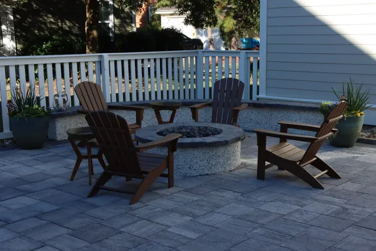
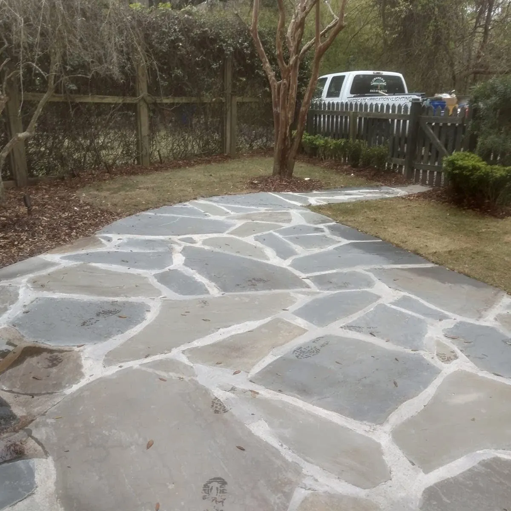

Professional Landscape Grading Services in Charleston, SC

Expert Landscape Grading Services In Charleston, SC
Proper landscape grading is the foundation of every functional, beautiful outdoor space. Whether you're preparing a new construction site, correcting drainage problems, or installing a patio or artificial turf, professional grading ensures your project succeeds long-term.
At Cramers Landscaping, we provide expert landscape grading services for residential and commercial properties throughout Charleston and the Lowcountry. Our experienced team uses precision equipment and proven techniques to reshape terrain, establish proper slope, and prepare your property for lasting landscape improvements.
From yard regrading and lot leveling to slope correction and drainage preparation, our land grading services solve problems and create opportunities for beautiful, functional outdoor spaces.
What Is Landscape Grading?
Landscape grading is the process of adjusting and shaping your property's elevation and slope to achieve specific functional and aesthetic goals. Professional grading and landscaping work together to:
Control Elevation
Grading establishes the finished elevation of your property relative to structures, streets, and neighboring lots. Proper elevation ensures water flows correctly and prevents flooding.
Create Proper Slope
Slope (also called grade or pitch) determines how water moves across your property. Positive slope directs water away from buildings; negative slope causes water to pool or flow toward structures—a major problem requiring correction.
Direct Water Flow
Strategic grading channels stormwater toward safe drainage points, preventing foundation damage, erosion, and standing water. Grading and landscape drainage work hand-in-hand to manage water effectively.
Prepare Sites for Improvements
Installing patios, artificial turf, sod, pools, or structures requires level, properly sloped base surfaces. Grading creates the foundation for these improvements, ensuring they perform and last as designed.
Why Proper Grading Matters in Charleston, SC
Charleston's unique geography—flat terrain, clay soils, high water table, and heavy rainfall—makes professional landscape grading essential for property functionality and protection.
Prevent Pooling & Standing Water
Charleston's flat landscape doesn't naturally shed water. Without proper grading, water collects in low spots, killing grass, creating mosquito habitat, and damaging foundations. Our landscape grading contractors establish positive slope to eliminate pooling.
Direct Water Away From Structures
This is grading's primary function and your property's first line of defense against water damage. Water flowing toward your home causes foundation cracks, crawl space moisture, wood rot, and structural damage. Professional grading ensures water flows away from buildings, protecting your largest investment before mechanical drainage systems become necessary.
Protect Foundations
Charleston's clay soils expand when wet and contract when dry, creating pressure against foundations. Proper grading prevents water accumulation near foundations, reducing hydrostatic pressure and structural stress.
Prepare for Landscaping Projects
Installing sod, artificial turf, or gardens requires level, properly prepared ground. Grading eliminates bumps, low spots, and compaction issues that cause poor results.
Support Hardscape Installations
Patios and pavers, walkways, retaining walls, and pool decks require stable, level bases to prevent settling, cracking, and failure. Professional landscape grading provides the foundation hardscapes need.
Prevent Erosion
Improper grading creates steep slopes or concentrated water flow that erodes soil, damages plantings, and creates gullies. Strategic grading controls water velocity and protects your landscape investment.
Create Functional & Beautiful Landscapes
Beyond drainage, grading shapes your outdoor spaces for both function and aesthetics. We create multiple elevation levels, incorporate retaining walls to terrace slopes, and design berms that are both visually appealing and functional. Strategic grading improves overall landscape flow, creates usable flat areas, and enhances your property's natural beauty.
Charleston's Unique Challenges
Many Charleston properties present grading challenges due to:
Low-elevation lots – Homes built at or near street level with minimal natural drainage slope
Historic lot elevations – Downtown Charleston and older neighborhoods where properties sit low due to original construction
Flood-prone areas – Properties in designated flood zones or areas with high water tables
Flat terrain – Charleston's Lowcountry geography provides little natural grade
In downtown Charleston and historic areas, grading alone is sometimes insufficient to solve drainage problems. Properties sitting at low elevations may require combined grading and mechanical drainage solutions to effectively manage water.
Our Landscape Grading Services
Cramers Landscaping offers comprehensive grading landscaping services tailored to Charleston properties. We handle projects of all sizes—from small yard corrections to large-scale lot preparation.

Yard Regrading
Yard regrading corrects problematic slope and elevation issues in existing landscapes. Over time, soil settles, erosion occurs, and landscaping changes alter water flow patterns. Regrading restores proper slope and eliminates drainage problems.
When Yard Regrading Is Needed:
- Standing water after rainfall
- Water flowing toward your home instead of away
- Uneven terrain creating mowing difficulties
- Settling around foundations or hardscapes
- Erosion damage from poor water flow
- Preparing for landscape renovations
Our landscape grading company carefully evaluates your property, removes or adds soil as needed, and reshapes terrain to establish functional, attractive grades that direct water correctly.

Lot Leveling
Lot leveling creates smooth, even surfaces for new construction, landscape installations, or recreational areas. Whether you're building a new home, installing a backyard play area, or preparing for artificial turf, lot leveling provides the level base required.
Lot Leveling Applications:
- New construction site preparation
- Backyard play areas and lawns
- Artificial turf installation base
- Garden bed preparation
- Outdoor entertainment spaces
- Sports courts and recreational areas
Our land grading services include removing vegetation, stripping topsoil for reuse, rough grading to establish elevation, and finish grading to create smooth, level surfaces ready for your project.

Slope Correction
Slope correction addresses areas that are too steep, too flat, or sloped in the wrong direction. Charleston properties often have problematic slopes that cause drainage issues, mowing difficulties, or erosion.
Slope Correction Solves:
- Steep banks that erode or are difficult to maintain
- Flat areas that don't drain
- Terrain sloped toward buildings (negative slope)
- Uneven yard areas creating drainage problems
- Slopes too steep for safe use or mowing
We reshape terrain to create functional slopes—typically 2-5% grade for most applications—that move water effectively while maintaining usability and aesthetic appeal.

Grading for Drainage Control
Drainage problems stem from grading issues. Our grading for drainage service establishes proper slope patterns that direct water to safe discharge points, French drains, or stormwater systems.
Drainage Grading Includes:
- Creating positive slope away from foundations (minimum 2% grade for first 10 feet)
- Establishing swales to channel water across properties
- Directing water to catch basins or drainage collection points
- Preventing water from neighboring properties from pooling on your lot
- Preparing sites for French drain installation
Effective landscape grading and drainage work together to protect your property. Our team integrates both services to solve water problems comprehensively.

Grading for New Installations
Installing hardscapes, artificial turf, sod, or outdoor structures requires precision grading to ensure proper performance and longevity.
Grading for Specific Projects:
Artificial Turf Grading: Artificial turf requires perfectly level base grading with proper drainage slope. We create smooth surfaces with 1-2% slope to prevent water accumulation while maintaining a level appearance.
Patio & Hardscape Grading: Patios need 1-2% slope away from buildings to shed water. We grade and compact base materials to prevent settling and create stable foundations for pavers and concrete.
Sod Installation Grading: Healthy sod requires level, properly drained soil. We grade to eliminate low spots where water pools, ensuring uniform growth and long-term turf health.
Pool Deck Grading: Pool decks must slope away from pools and buildings. We establish proper drainage patterns while creating level areas for furniture and entertaining.
Retaining Wall Grading: Retaining walls near me require backfill grading and drainage to prevent hydrostatic pressure. We grade behind walls to direct water to drainage systems, ensuring structural integrity.
Grading for Landscaping & Construction Projects
Professional landscape grading services support and enhance other outdoor improvements:
Artificial Turf Installation
Artificial turf in Charleston requires perfect base preparation. Our grading creates level surfaces with subtle drainage slope (1-2%), compacts base materials, and ensures turf drains properly during heavy rain. Without proper grading, artificial turf develops low spots where water pools, creating slippery surfaces and shortening turf life.
Sod Installation
Beautiful lawns start with proper grading. We eliminate bumps and low spots, establish drainage slope, and prepare soil for sod installation. Proper grading prevents water accumulation that causes fungal disease and turf decline.
Patios & Pavers
Patio and paver longevity depends on stable, properly graded bases. We excavate to proper depth, grade base materials with precision slope, and compact thoroughly to prevent settling. Patios installed on ungraded or poorly prepared bases crack, settle, and fail prematurely.
Pool Decks
Concrete pool decks require grading that balances level entertaining areas with drainage slope. We create surfaces that shed water away from pools and homes while maintaining comfortable, usable spaces.
Outdoor Structures
Pergolas, pavilions, outdoor kitchens, and sheds need level foundations. Our grading creates stable platforms that prevent structural settling and water intrusion.
Retaining Walls
Retaining walls near me control slope and create usable terraced spaces. We grade areas above and below walls, install drainage systems behind walls, and prepare bases for proper wall construction.
Landscape Installations
New landscape installations succeed when planted on properly graded terrain. We shape planting beds, establish drainage patterns, and create gentle contours that enhance both aesthetics and plant health.
Why Hire a Professional Grading Contractor
Effective landscape grading isn't a simple task—it requires expertise, specialized equipment, and engineering knowledge.
Precision Equipment
Professional landscape grading contractors use laser-guided equipment, skid steers, excavators, and grading boxes to achieve precise slopes and elevations. This equipment creates results impossible to achieve with manual methods.
Engineering Knowledge
Establishing proper slope requires calculating percentages, understanding water flow dynamics, and knowing Charleston's soil characteristics. Our team engineers grading solutions based on proven principles and local conditions.
Soil Management
Grading involves understanding cut-and-fill operations, topsoil preservation, compaction requirements, and soil amendments. We manage soil properly to create stable, long-lasting grades that support your landscape.
Drainage Integration
Grading and drainage are inseparable. Our landscape grading company integrates drainage solutions with grading work to solve water problems comprehensively.
Code Compliance
Charleston has regulations governing grading, stormwater management, and erosion control. We ensure all grading work complies with local codes and permitting requirements.
Long-Term Results
DIY grading attempts often create new problems—incorrect slopes, compaction issues, or drainage failures. Professional grading delivers results that protect your property and support your landscape for decades.
Our Landscape Grading Process
Cramers Landscaping follows a proven process to deliver precise, functional grading results:
Site Assessment

We survey your property, evaluate existing grades, identify problem areas, and understand your project goals. This assessment informs our grading plan.
Grading Design

Our team develops a grading plan specifying elevations, slopes, drainage patterns, and soil management strategies. We explain the plan and ensure you understand how grading solves your property's challenges.
Permits & Approvals

If required, we handle permit applications and coordinate with local authorities to ensure compliance with Charleston grading regulations.
Site Preparation

We protect existing features you want to preserve, mark utility lines, and prepare the work area for grading operations.
Grading Execution

Using precision equipment, we execute the grading plan—cutting high areas, filling low spots, establishing proper slopes, and compacting soil to create stable grades.
Finish Grading & Restoration

We perform fine grading to create smooth surfaces, restore topsoil, and prepare your property for the next phase—whether that's landscaping, hardscaping, or simply enjoying better drainage.

Grading Services AcrossGrading Services Across Charleston & the Lowcountry
Cramers Landscaping provides professional landscape grading services throughout Charleston and surrounding communities:
We understand Lowcountry terrain, soil conditions, and drainage challenges, and we engineer grading solutions specifically for Charleston properties.
Frequently Asked Questions
What is grading in landscaping?
Grading in landscaping is the process of shaping and adjusting your property's elevation and slope to achieve proper drainage, create level surfaces for improvements, and establish functional outdoor spaces. Grading controls how water moves across your property and prepares sites for landscaping and hardscaping projects.
How much does landscape grading cost?
Landscape grading costs vary based on project size, site conditions, soil quantity needed, and equipment requirements. Small yard regrading projects may cost $1,500-$3,000, while comprehensive lot grading can range from $3,000-$10,000+. We provide detailed estimates after evaluating your property.
Do I need grading before artificial turf or patios?
Yes, absolutely. Artificial turf and patios require precise base preparation and drainage slope. Without proper grading, artificial turf develops low spots where water pools, and patios settle, crack, or fail. Professional grading ensures these improvements perform correctly and last for years.
Will grading damage my lawn?
Grading requires excavation and soil movement, so temporary disturbance is unavoidable. However, we minimize impact on existing landscapes, preserve topsoil when possible, and restore disturbed areas with sod or seed. Proper grading prevents permanent damage from ongoing drainage problems—short-term disruption for long-term benefits.
How long does landscape grading take?
Most residential grading projects take 1-5 days depending on size and complexity. Small yard corrections can be completed in a day, while extensive lot grading or new construction site preparation may take a week or more.
Can you fix my yard without major excavation?
Often, yes. We use techniques like topdressing (adding soil layers) and surface grading to correct minor slope issues without major excavation. For significant drainage problems or elevation changes, more extensive grading is necessary for effective, permanent solutions.
What's the difference between rough grading and finish grading?
Rough grading establishes overall site elevations and drainage patterns using larger equipment. Finish grading creates smooth, precise final surfaces ready for landscaping or hardscaping. Most projects require both phases for optimal results.
Do you preserve existing trees and plants?
When possible, yes. We work carefully around trees you want to preserve, protecting root zones and avoiding grade changes that harm tree health. We'll discuss which features can be preserved during site assessment.
What slope percentage is needed for proper drainage?
Minimum 2% slope (2 feet of drop per 100 feet) away from buildings is recommended for the first 10 feet. General landscape areas work well with 2-5% slope. Steeper slopes require erosion control measures or terracing with retaining walls.
Request Free Grading Consultation
Ready to solve drainage problems, prepare your property for improvements, or correct problematic terrain? Contact Cramers Landscaping for expert landscape grading services in Charleston, SC.
Call us at (843) 614-9773 or request a consultation to schedule your free grading evaluation.
Our experienced grading landscaping contractors will assess your property, explain grading solutions, and provide a detailed estimate for professional land grading services.
Cramers Landscaping | Professional Landscape Grading Services in Charleston, SC
Phone: (843) 614-9773
Email: doug@cramerslandscaping.com
Website: cramerslandscaping.com